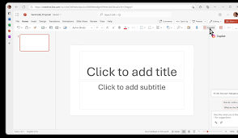

Prezentáció készítése
Ez a tantárgy a prezentáció készítése alapjait tartalmazza.
Tartalom
- Prezentációs programok szolgáltatásai
- Prezentáció felépítése
- Prezentáció készítése, fajtái
- Szöveg és objektumok elhelyezése
- Formázás automatikus eszközökkel
- Egyéni animáció
- Áttűnés, időzítés
- Kész prezentáció készítése